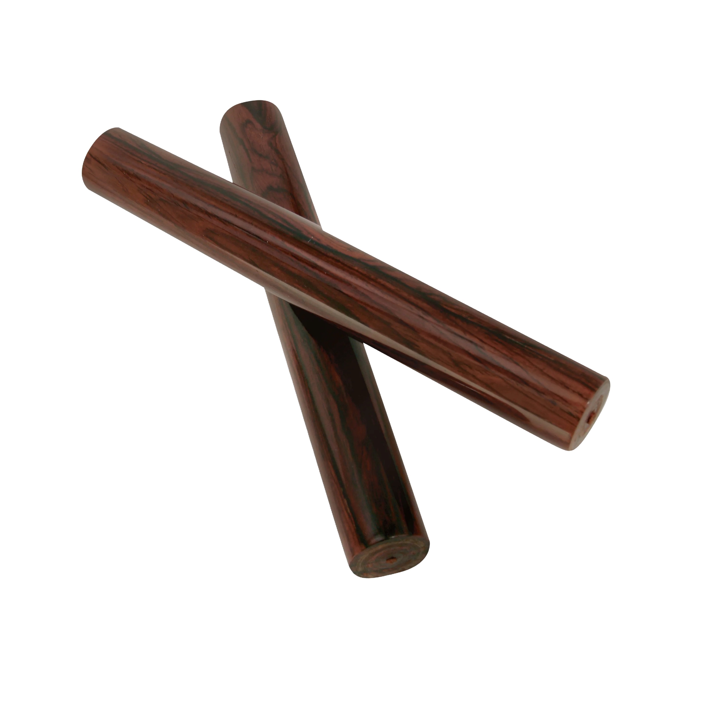

Claves, Cuba, 19th century

Claves are a pair of short, cylindrical wooden sticks struck together to produce a sharp, penetrating sound. Though simple in appearance, their bright, cutting tone makes them essential in many musical traditions, particularly Afro-Cuban and Latin American music. One clave is typically held loosely in the palm to create a resonating chamber, while the other strikes it to produce a clear, resonant click. Beyond their use as a rhythmic instrument, claves often articulate foundational rhythmic patterns—such as the “clave” rhythm in Cuban music—that organize and guide an entire ensemble. Their minimal design demonstrates how rhythm alone can shape complex musical structures.
click here to listen to me! click here to learn how to play me!